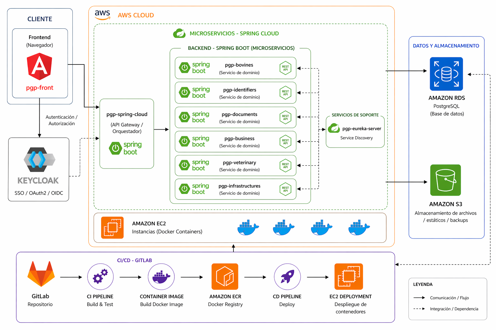

Desarrollador full stack con experiencia en Java, microservicios, AWS, CI/CD y desarrollo frontend para soluciones end-to-end.
ContáctamePoderosa plataforma web para el sector ganadero, enfocada en la gestión de cada recurso estratégico que el usuario posea en su predio. Permite gestionar bovinos, identificadores, documentos, negocios, gestión veterinaria, infraestructura, entre otras, de manera eficiente e intuitiva permitiendo enfocarse en el trabajo que realmente importa en el predio.
www.plataformagestionpredial.clArquitectura

Soy desarrollador full stack con experiencia en la construcción de aplicaciones web modernas y escalables. Trabajo tanto en frontend como en backend utilizando tecnologías como Angular, React y Vue, junto con Java, Node.js, PHP y Python. He desarrollado APIs REST y soluciones basadas en arquitectura de microservicios, integrando bases de datos relacionales y NoSQL como PostgreSQL, Oracle y MongoDB. Además, cuento con experiencia en despliegue y gestión de aplicaciones en AWS (EC2, ECR, S3, RDS), así como en la implementación de pipelines de integración y despliegue continuo (CI/CD) utilizando Docker. Me enfoco en escribir código limpio, construir sistemas eficientes y seguir buenas prácticas de desarrollo para crear soluciones robustas y mantenibles.
¿Tienes un proyecto en mente? Hablemos.
Enviar email